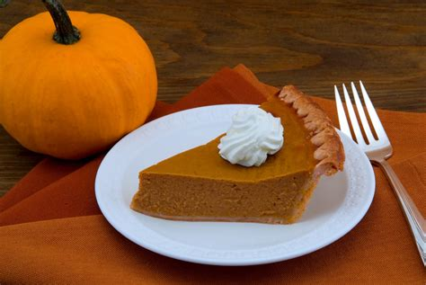
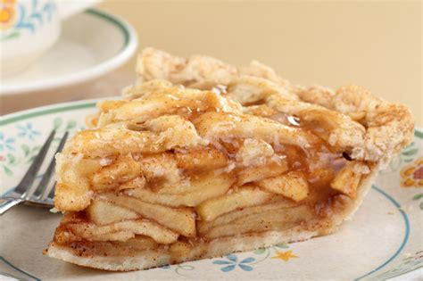
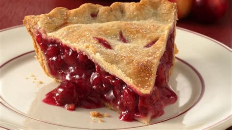
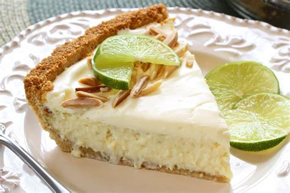

Made with fresh pecan halves, brown sugar, vanilla, and rum. We also add heavy whipping cream to our pies just before baking to give them a rich creamy consistency.

Pumpkin pie infused description.

Not to be mistaken for pumpkin, sweet potato pie is the reigning champ across the deep south.

They say, "An apple a day keeps the doctor away". Why not have pie with a hint of Crown Apple?

Cherry pie infused description
Amaretto or liquer flavored cheesecake description.

A Florida treat featuring fresh tart lime on a buttery yet firm graham cracker crust topped with a rum infused whipped cream.

Explore more from the Boozy Baker. It's that time.